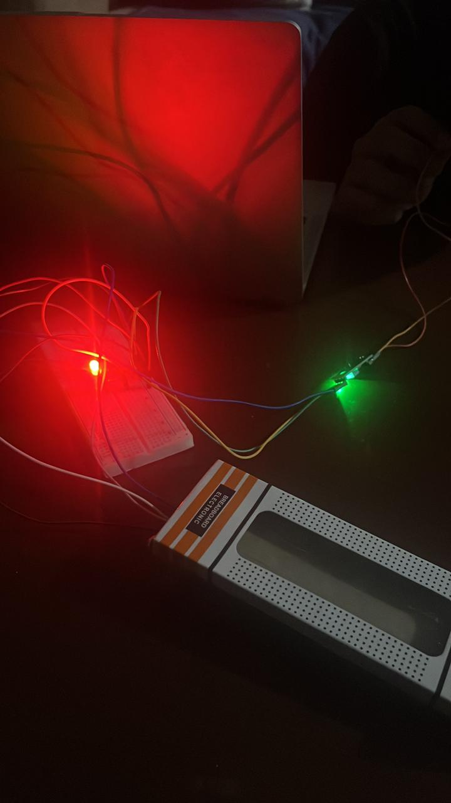
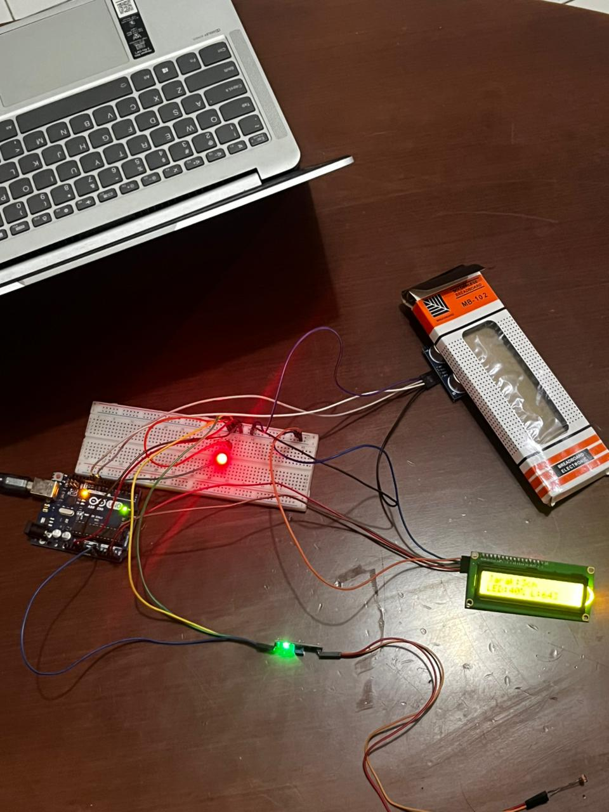
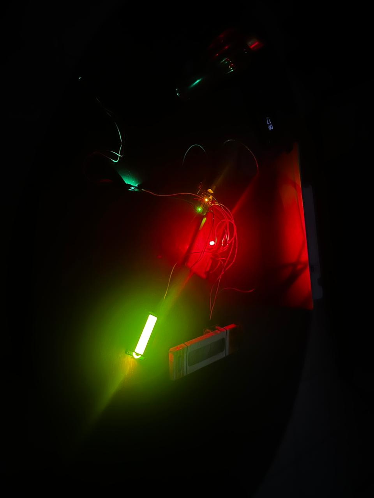
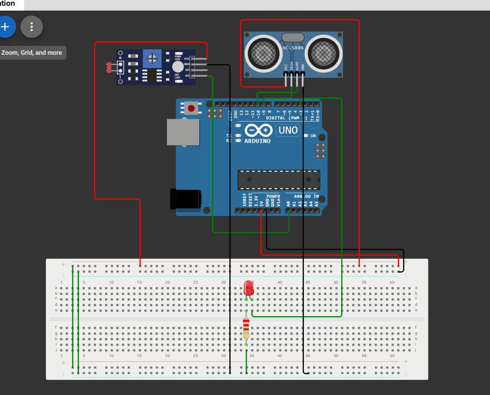

Project Smart Lighting System menggunakan Arduino, sensor jarak, dan sensor cahaya untuk mengontrol lampu otomatis.
Sistem akan mendeteksi keberadaan seseorang dalam jarak tertentu. Jika terdapat objek atau orang, lampu akan menyala secara otomatis.
Intensitas lampu akan menyesuaikan kondisi ruangan. Saat ruangan terang, lampu akan redup atau mati. Sebaliknya, saat ruangan gelap, lampu akan menyala lebih terang.
Project ini menggunakan Arduino Uno, sensor LDR, sensor ultrasonik, LCD Display, dan PWM control.